Описание инструмента
Запустите ПО Рациональное производство.
- Для начала работы загрузите необходимую планировку.
- На планировке должен присутствовать компонент «Оператор MoCap (Имя) ПРМ», который можно найти в электронном каталоге «МП MoCap» (рис. 1).
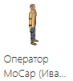
Рисунок 1 – Оператор MoCap в электронном каталоге
- Во вкладке «Программирование» найдите раздел «Эргономика», выберите инструмент «Эргономика ПРМ» (рис. 2-3).
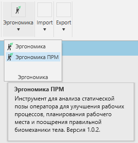
Рисунок 2 – Новый раздел «Эргономика ПРМ» во вкладке «Программирование»
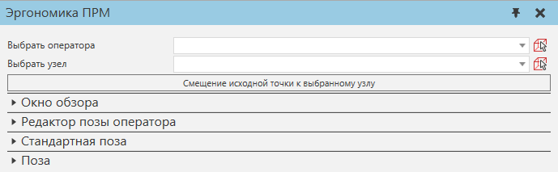
Рисунок 3 – Внешний вид инструмента
- Далее необходимо выбрать оператора. Его можно выбрать с помощью выпадающего списка или с планировки (рис. 3).
- Для манипуляции с каким-либо узлом оператора необходимо выбрать узел. Его можно выбрать с помощью выпадающего списка или с планировки (рис. 3). Также можно управлять списком комбинациями клавиш Ctrl+J (назад) и Ctrl+K (вперед).
- Кнопка «Смещение исходной точки к выбранному узлу» помогает сдвинуть исходную точку компонента в выбранный узел (рис. 3).
- Существует возможность поменять отображение оператора на планировке, зайдите во вкладку «Display» и выберите нужные настройки (рис. 4-10).
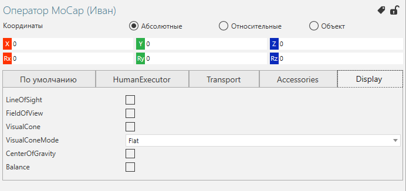
Рисунок 4 – Вкладка Display у оператора
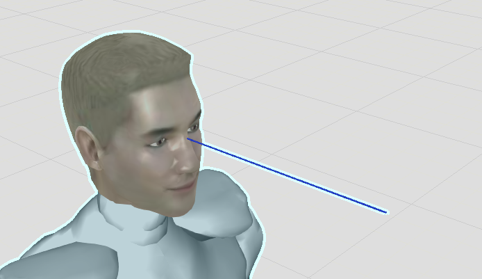
Рисунок 5 – «Line of sight» – линия взгляда
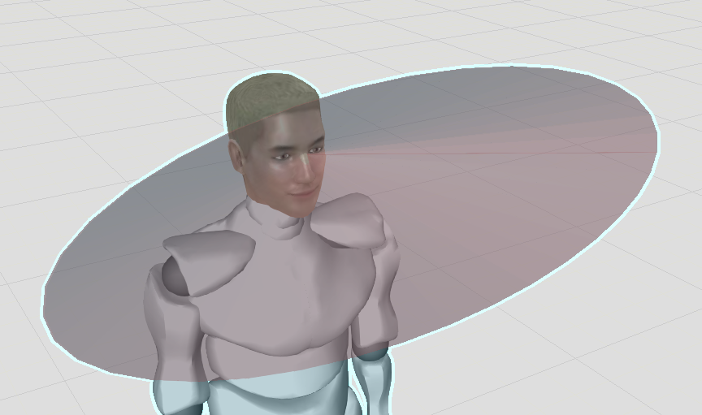
Рисунок 6 – «Field of view» – поле зрения
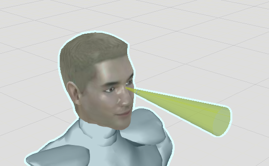
Рисунок 7 – «Visual Cone» – визуальный конус

Рисунок 8 – «Center of gravity» – центр тяжести
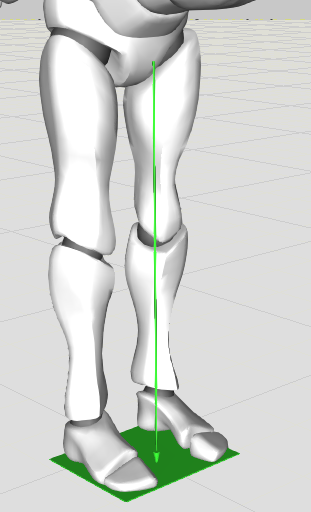
Рисунок 9 – «Balance» – баланс

Рисунок 10 – Все вместе
- Вкладка «Окно обзора» создана для просмотра вида оператора от первого лица в отдельном окне (рис. 11). Нажмите кнопку «Открыть окно обзора» для просмотра.
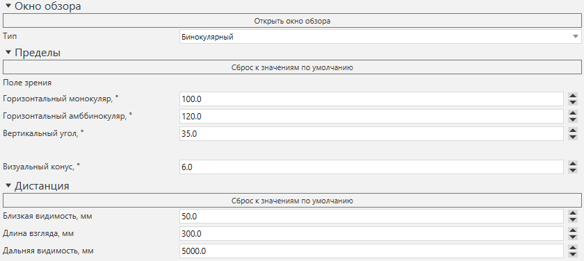
Рисунок 11 – Вкладка «Окно обзора»
- Вкладка «Пределы» отвечает за настройку различных углов обзора, вкладка «Дистанция» отвечает за настройку дальности обзора и точки фокусировки (рис. 11).
- Также есть возможность выбрать различные типы обзора (рис. 12-16).
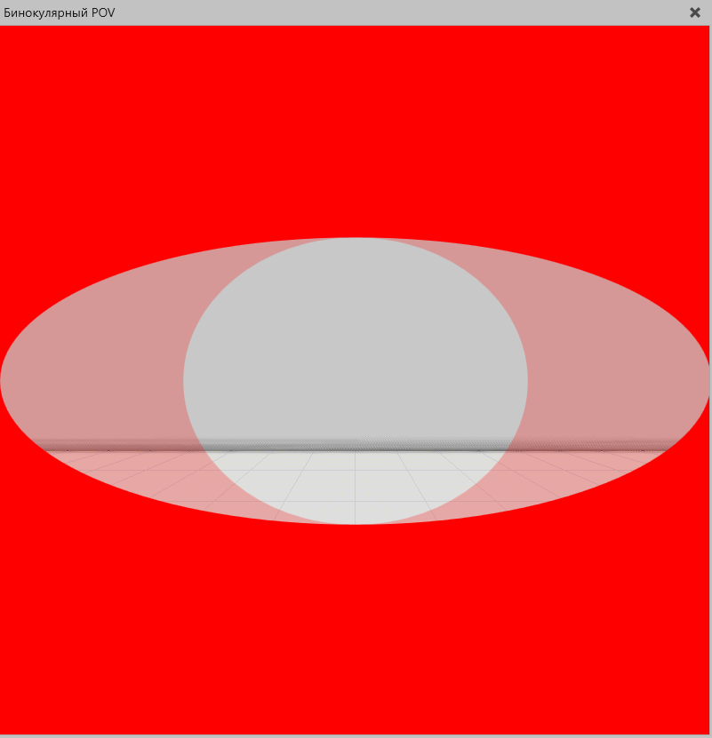
Рисунок 12 – Бинокулярный
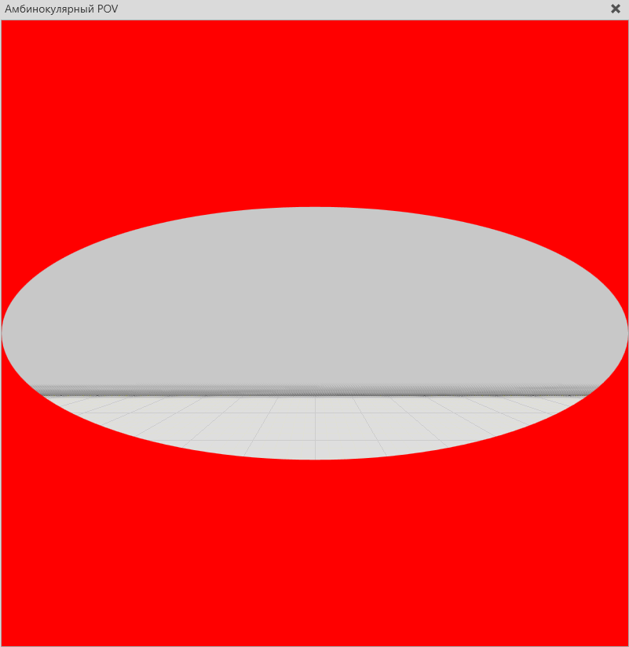
Рисунок 13 – Амбинокулярный
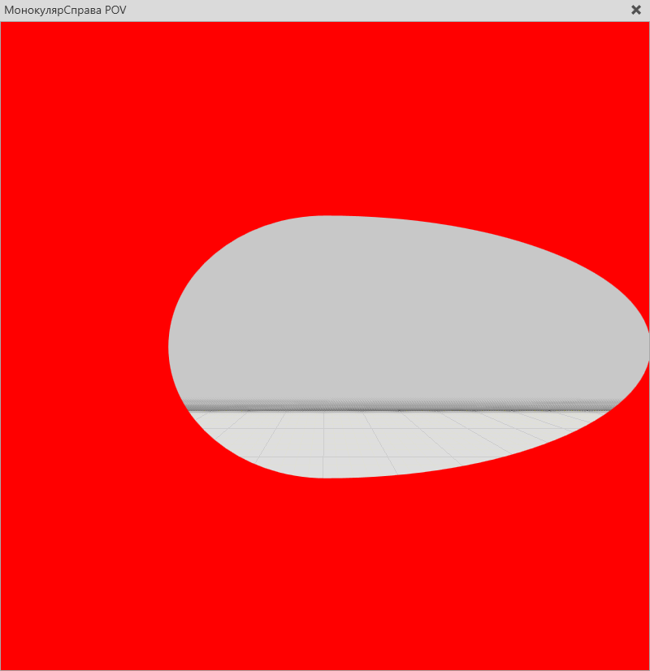
Рисунок 14 – Монокуляр справа
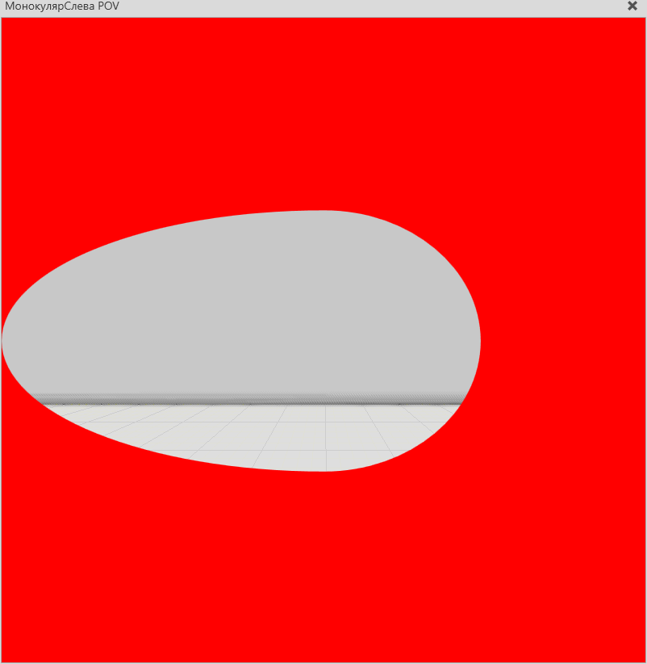
Рисунок 15 – Монокуляр слева
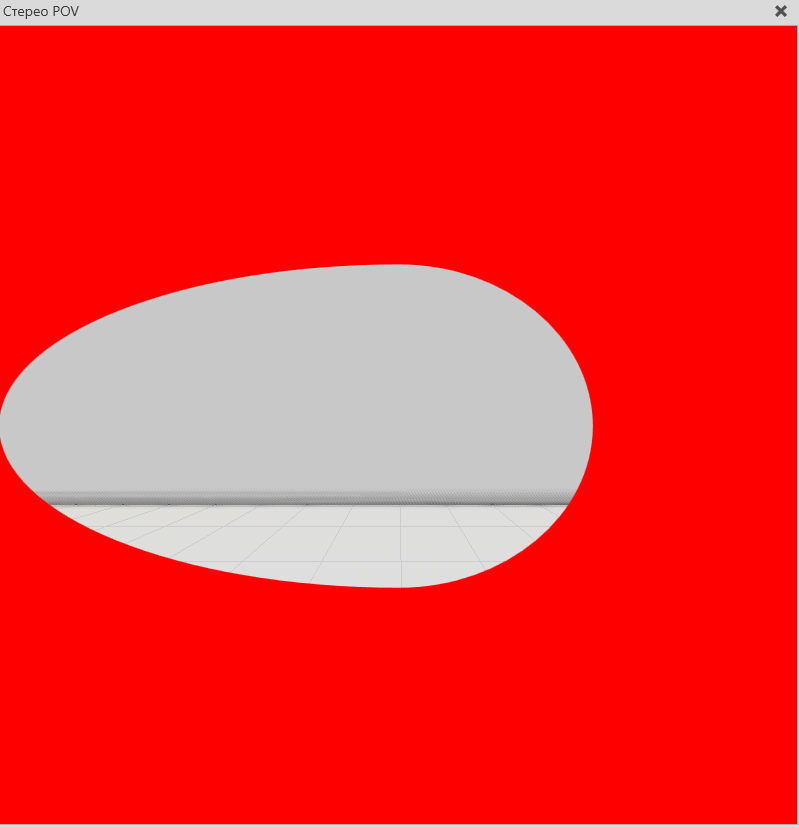
Рисунок 16 – Стерео
- Вкладка «Редактор позы оператора» помогает нам включить/выключить манипулятор. Комбинация клавиш также включает/выключает манипулятор Ctrl+M (рис. 17). Выбранный узел отобразится ниже вкладки «Начальная поза» и будет показывать текущие углы поворота части тела.
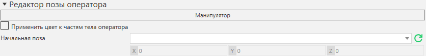
Рисунок 17 – Вкладка «Редактор позы оператора»
- Выпадающий список «Начальная поза» позволяет задать начальную позу оператора. Есть кнопка обновить (рис. 18-23).
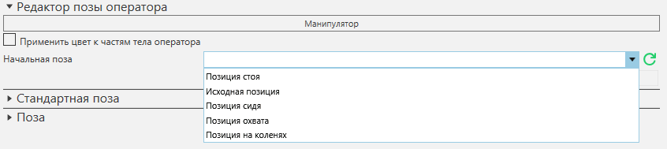
Рисунок 18 – Вкладка «Редактор позы оператора» после выбора оператора и узла
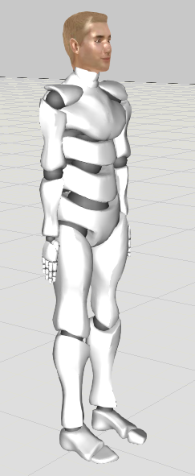
Рисунок 19 – Позиция стоя
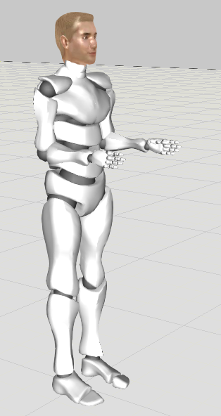
Рисунок 20 – Исходная позиция

Рисунок 21 – Позиция сидя
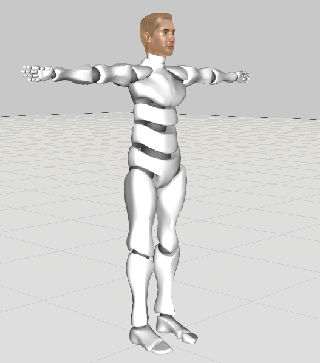
Рисунок 22 – Позиция обхвата

Рисунок 23 – Позиция на коленях
- Манипулятор позволяет работать с различными частями тела оператора, подсвечиваются одновременно все варианты перемещения, лимитирующие углы, а также части манипулятора подсвечиваются, основываясь на результате оценки эргономики.

Рисунок 24 – Взаимодействие с манипулятором

Рисунок 25 – Манипулятор без взаимодействия
- Чтобы избежать неправильную работу с оператором, рекомендуется избегать изменение углов поворота во вкладке «Взаимодействие».
- При работе с узлом Pelvis_R угол бедра изменяется противоположно повороту таза, чтобы сохранялось вертикальное положение модели оператора.
- Галочка «Применить цвет к частям тела оператора» отвечает за отображение цветом оценки эргономики прямо на операторе (рис. 26).

Рисунок 26 – Применить цвет к частям тела оператора
- Вкладка «Стандартная поза» помогает нам поставить оператора в определенную позу, которую можно редактировать более удобно (рис. 27-34). Кнопка «Сохранение направления взгляда» позволяет держать голову в определенном направлении неизменной до максимальных углов.
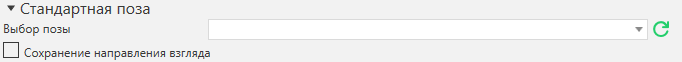
Рисунок 27 – Вкладка «Стандартная поза»
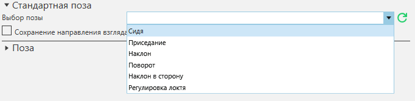
Рисунок 28 – Вкладка «Стандартная поза» после выбора оператора
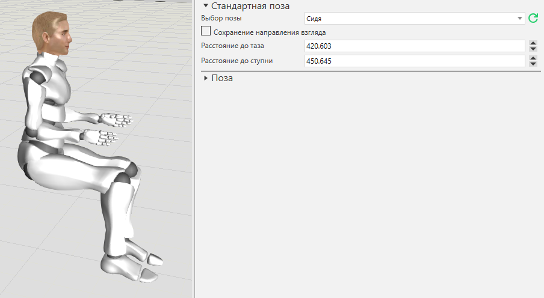
Рисунок 29 – Поза сидя
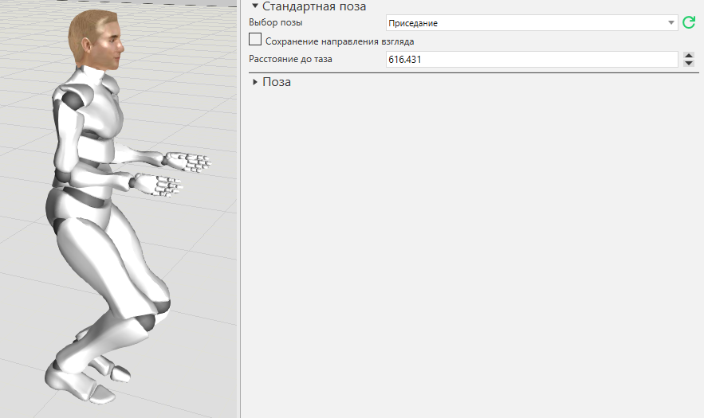
Рисунок 30 – Поза приседание
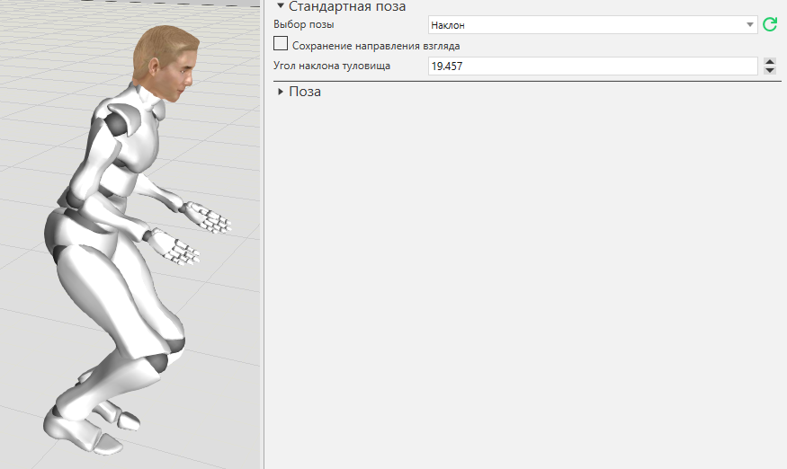
Рисунок 31 – Наклон
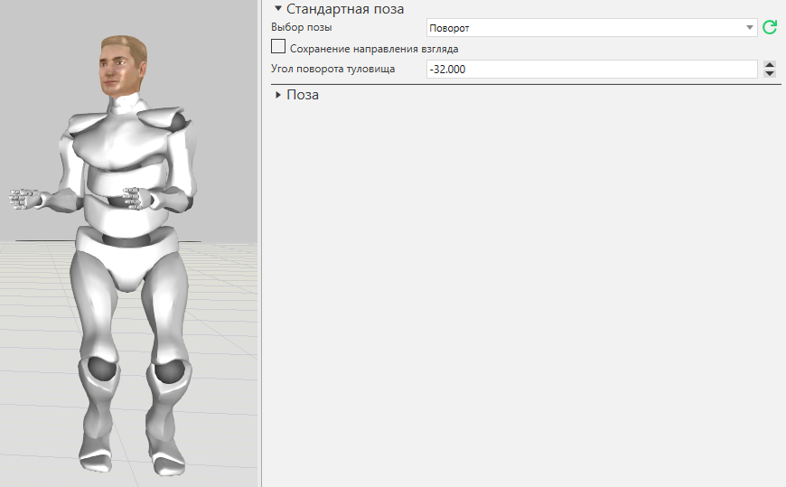
Рисунок 32 – Поворот туловища
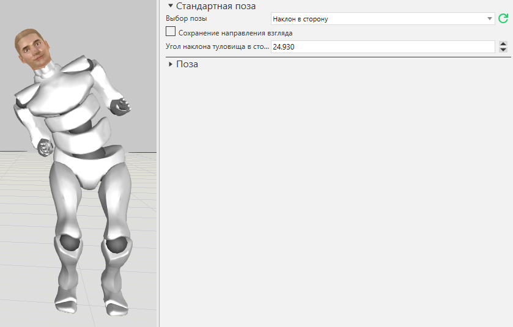
Рисунок 33 – Наклон туловища в сторону
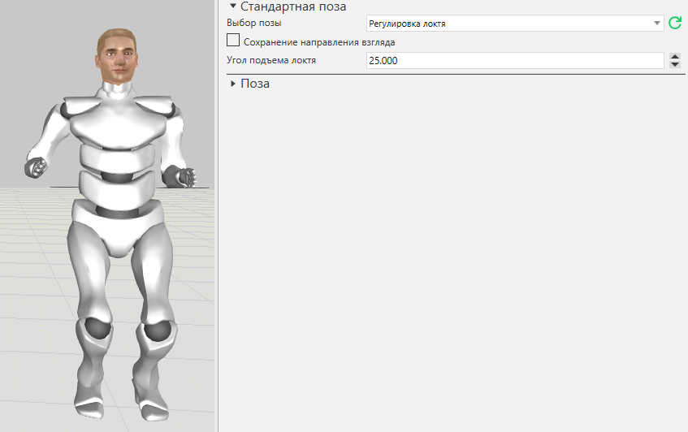
Рисунок 34 – Регулировка локтя
- Вкладка «Поза» позволяет оценить текущую статическую позу оператора. Результат представляется в виде таблицы (рис. 35) (табл. 1-2). Здесь можно выбрать есть ли у оператора удобная опора, длительность нахождения в такой позе в секундах, вес/усилие в килограммах.
- Кнопка «Получить отчет об оценке позы» выгружает все входные данные и результаты оценки эргономики в формат .pdf (рис. 36).
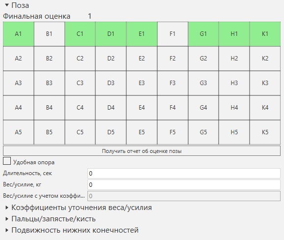
Рисунок 35 – Вкладка «Поза»
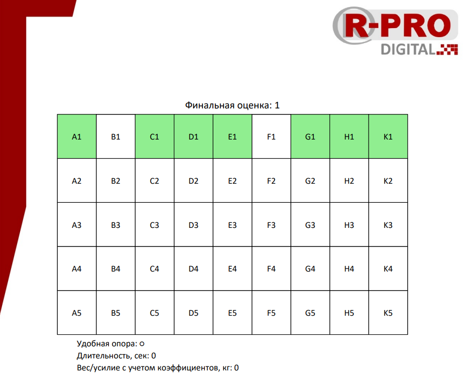
Рисунок 36 – Пример отчета
Таблица 1 – Положение тела
ТУЛОВИЩЕ |
ГОЛОВА |
ВЕРХНИЕ КОНЕЧНОСТИ |
ПОДВИЖНОСТЬ НИЖНИХ КОНЕЧНОСТЕЙ |
УРОВЕНЬ |
|||||
НАКЛОН |
НАКЛОН В СТОРОНУ |
ПОВОРОТ |
РУКА / КИСТЬ |
ПАЛЬЦЫ/ ЗАПЯСТЬЯ/ КИСТЬ |
|||||
Без опоры или длит-ть > 2 сек или усилие > 2кг |
- С опорой (1) и - длит-ть ≤ 2 сек и усилие ≤ 2 кг |
длит-ть > 5 cек или усилие > 2 кг |
длит-ть ≤ 5 cек и усилие ≤ 2 кг |
||||||
A1 Нет наклона |
B1 0° α 10° |
C1 Нет наклона в сторону |
D1 Нет поворота |
E1 Нет сгибания, разгибания, поворота, наклона |
F1 - Рука < 30°, Кисть ниже уровня сердца |
G1 Рука < 30° Кисть на уровне сердца |
H1 Нет значительного сгибания или выгибания кисти < 10° |
K1 |
1 |
A2 <10° |
B2 10° α 30° |
C2 <10° |
D2 <20° |
E2
|
F2 Рука < 30° Кисть на уровне сердца |
G2 Рука 30-90° Кисть на уровне плеч |
H2
|
K2 |
2 |
A3 10° α 30° |
B3 30° α 60° |
C3 10° α 30° |
D3 20° α 40° |
E3
|
F3 Рука 30-90° Кисть на уровне плеч |
G3 - Кисть на уровне головы - Рука вытянута вперед на высоте |
H3 - Простое наживление - Простая обработка напильником |
K3 - Подъем или спуск на 1 или 2 ступеньки (300мм) или одно препятствие ≤ 170 мм руки свободные |
3 |
A4 30° α 60° (2) |
B4 60° α 90° (2) |
C4 30° α 60° (2) |
D4 40° α 60° (2) |
E4 - Взгляд в высоту 40 - 60° дли-ть > 5 сек - Поворот 45°-90° (45°- 60°) - Наклон в сторону (0° - 30°) (2) |
F4 - Кисть на уровне головы - Рука вытянута вперед на высоте (2) |
G4 - Кисть выше головы - Рука отведена в сторону > 45° - Плечо или локоть подняты (2) |
H4 - Сгибание или разгибание запястья > 60° - Удар рукой без сложной фиксации (2) - Использование молотка или киянки простое - Повторяющиеся вращения руки-предплечья- локтя включая сложное наживление или сложное спиливание - Сильное вкручивание |
K4 - На корточках≤ 5 сек - Перемещение в сторону > 30% Тц - Перемещение назад ≤ 30% Тц - Подъем/спуск или препятствие ≤ 300 мм руки заняты - Подъем или препятствие между 300 мм и 500 мм (4) |
4 |
A5 - ≥ 60° - Наклон назад |
B5 - ≥ 90° - Наклон назад |
C5 ≥ 60° |
D5 ≥ 60° |
E5 - Сильное отклонение назад или взгляд ≥ 60° - Поворот ≥ 90° (≥ 60°) - Сильный наклон в сторону ≥ 30° или вперед |
F5 - Кисть выше головы - Рука отведена в сторону > 45° - Плечо или локоть подняты |
G5
|
H5 - Сгибание или разгибание запястья > 60° и усилие > 3 кг - Удар рукой со сложной фиксацией - Использование молотка или киянки повторяющееся - Риск суставных заболеваний |
K5 - На корточках или ноги полусогнуты > 5 сек - Стоя на коленях или сидя на полу в кузове - Перемещение назад > 30% Тц - Перемещение > 20 м/мин - Подъем/спуск на 3 ступени с громоздким грузом - Препятствие высотой > 500 мм (4) |
5 |
(1) Примеры удобной опоры:
- Между верхней частью бедер и пупком,
- Опора на ладонь руки,
- Возможность расставить широко ноги.
Нет перемещения назад или в сторону.
(2) Если одновременно положение тела из 2 ограничений, следует добавить 1 уровень.
(3) Если операторы носят защитные рукавицы, уменьшите оценку на один уровень.
(4) Для логистов и, в частности, для операторов вилочных погрузчиков, уменьшить ограничение на один уровень, если есть ручка для подъема/спуска.
Таблица 2 – Дополнительная оценка пальцы/запястье/кисть
Хорошая площадь контакта |
Плохая площадь контакта |
<30 |
30≤α≤60 |
>60 |
≤3 kg |
≤2 kg |
H2 |
H3 |
H4 |
3<α≤6 kg |
2<α≤4 kg |
H3 |
H4 |
H5 |
6<α≤10 kg |
4<α≤6 kg |
H4 |
H5 |
H5 |
>10 kg |
>6 kg |
H5 |
H5 |
H5 |
- Вкладка «Коэффициент уточнения веса/усилия» нужна для того, чтобы скорректировать вес при определенных условиях (рис. 37-38) (табл. 3).
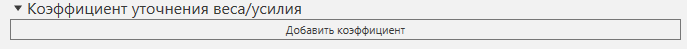
Рисунок 37 – Вкладка «Коэффициент уточнения веса/усилия»
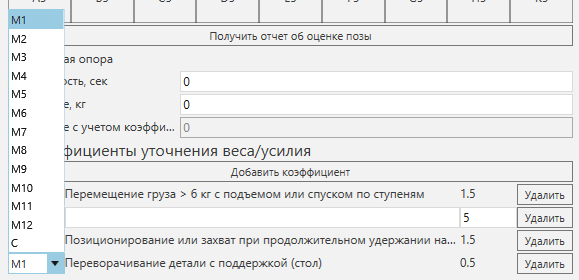
Рисунок 38 – Вкладка «Коэффициент уточнения веса/усилия»
Таблица 3 – Коэффициенты уточнения веса/усилия
Коэффициент уточнения веса и усилий Уточнения применяется только к грузам > 2 кг. Если два и более весовых коэффициента (кроме M1 и M2), применяются одновременно к одному и тому же уточнению веса, применяется коэффициент 2. |
Коэффициент |
|
M1 |
Переворачивание детали с поддержкой (стол) |
0,5 |
M2 |
Толкание средств помощи с хорошей опорой на нескользком полу |
0,7 |
M3 |
Переворачивание груза без опоры |
1,5 |
M4 |
Перемещение груза с раздвинутыми (>1000 мм) или вытянутыми (на расстоянии > 500 мм) руками |
1,5 |
M5 |
Позиционирование или захват при продолжительном удержании на весу одной рукой |
1,5 |
M6 |
Груз не жесткий, без ручки, или со смещенным центром тяжести |
1,5 |
M7 |
Перемещение груза > 6 кг или громоздкого за пределами эргономичного окна: высота (положение рук) < 500 или >1500 мм. Громоздкие: деталь размер которой (высота, ширина или глубина) превышает 1000 мм, за исключением легких и гибких деталей (кабелей, шлангов и т.д…). |
1,5 |
M8 |
Перемещение груза > 6 кг кончиками пальцев или одной рукой |
1,5 |
M9 |
Перемещение груза > 6 кг с подъемом или спуском по ступеням |
1,5 |
M10 |
Перемещение груза > 6 кг с вынужденным перемещением более чем на 5м |
1,5 |
M11 |
Усилие по отведению одной рукой (отведение руки или кисти наружу) |
2 |
M12 |
Поднятие груза в положении сидя |
2 |
C |
В особых случаях, после консультации с экспертом, возможно внести специальные условия, не фигурирующие в данной таблице. |
Любой |
- Вкладки «Пальцы/запястье/кисть» и «Подвижность нижних конечностей» нужны для того, чтобы задать вводные условия для статической позы (рис. 39-40).
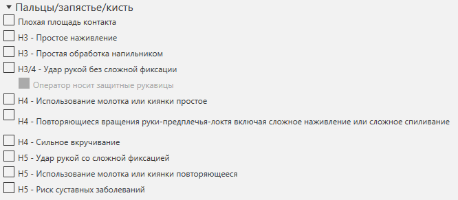
Рисунок 39 – Вкладка «Пальцы/запястье/кисть»
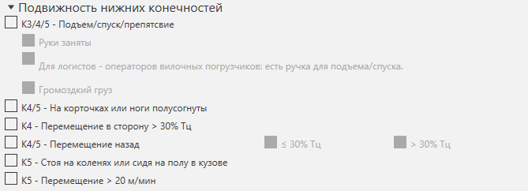
Рисунок 40 – Вкладка «Подвижность нижних конечностей»